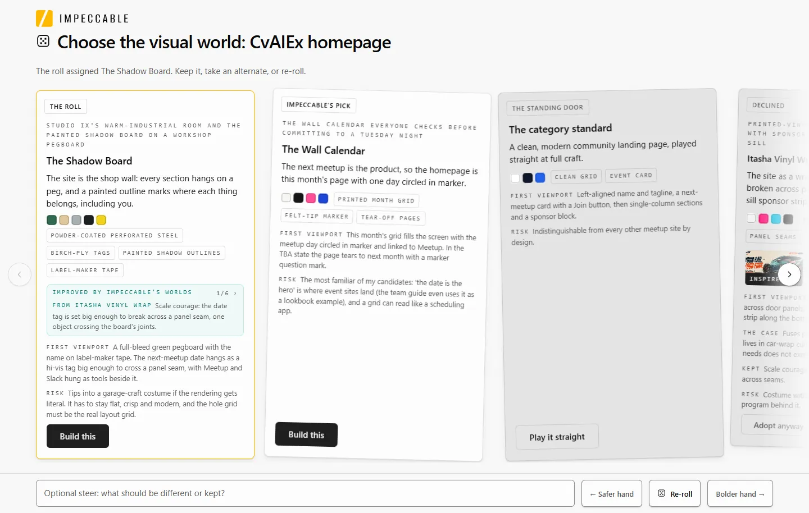
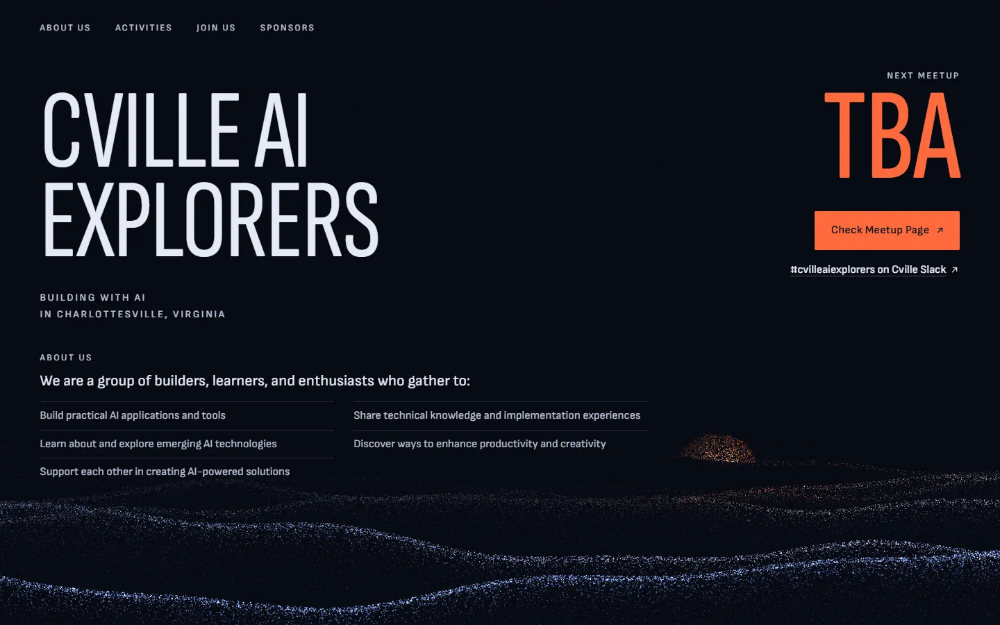
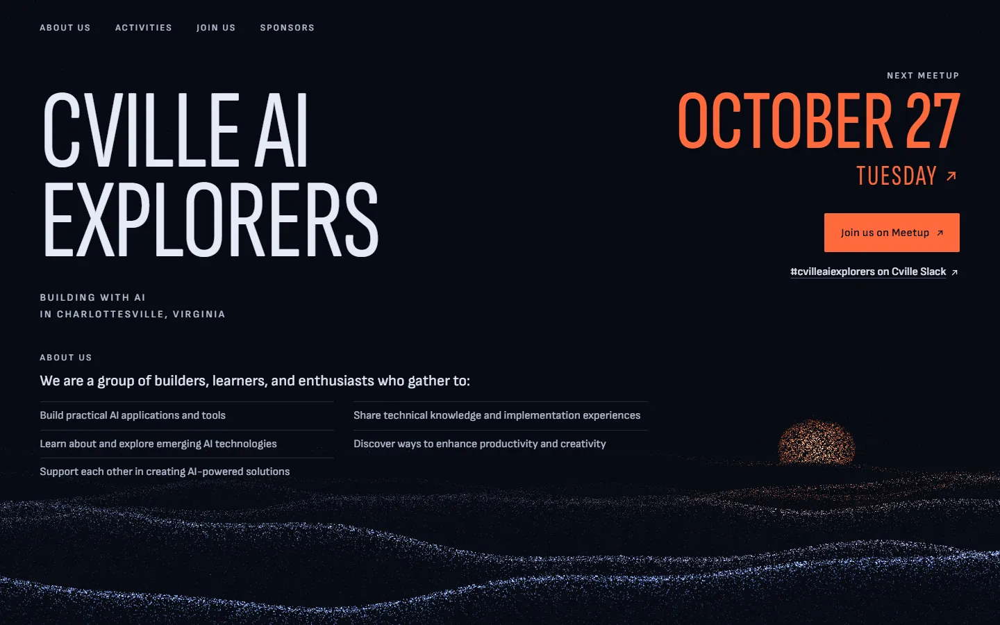
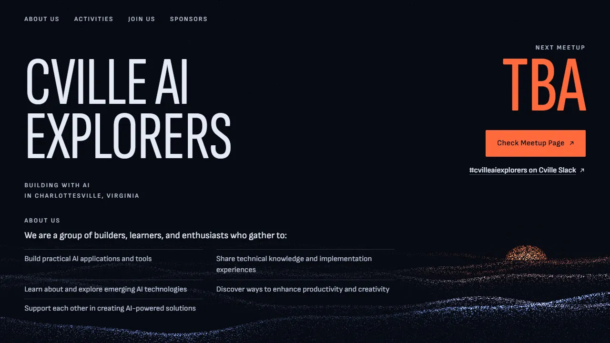
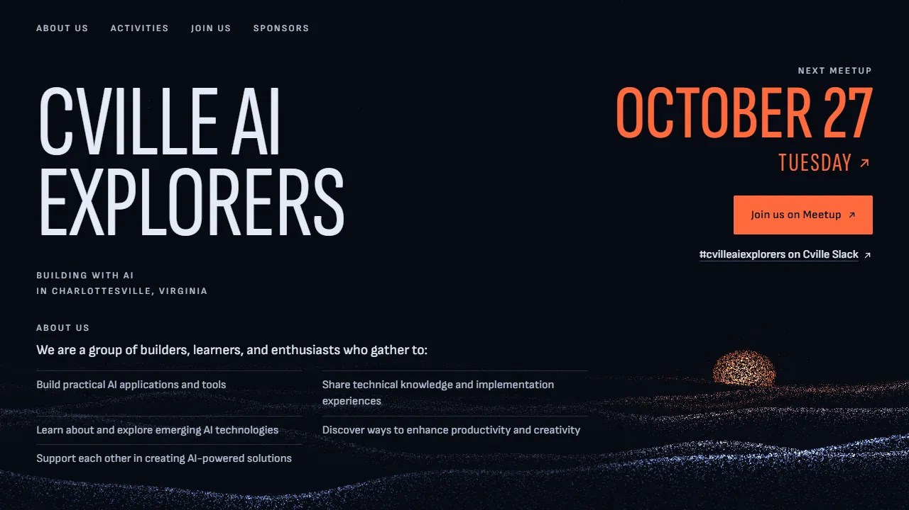
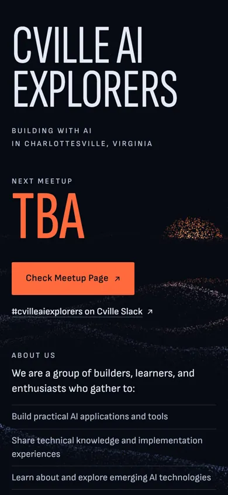

The journey
How Blue Ridge at Dusk took shape
Impeccable left a trail of working files: the product brief, the round of directions it dealt, the direction the team committed to, and the final screenshots.
The product brief
/impeccable init interviewed the team and wrote PRODUCT.md: who the site is for, what it must do (show the next date or say it's TBA, then route people to Meetup and Slack), and what to avoid: AI-startup gloss, AI-slop copy, a corporate look and insider signals.
The direction round
/impeccable shape rolled for a lead direction, The Shadow Board, and Impeccable put forward its own pick, The Wall Calendar. Six challengers from outside the group's world were dealt beside them. The team set the literal concepts aside and took the WebGL Shader Portal.

The Shadow Board
The site is the shop wall: every section hangs on a peg, and a painted outline marks where each thing belongs, including you.
The Wall Calendar
The next meetup is the product, so the homepage is this month's page with one day circled in marker.
Itasha Vinyl Wrap
The site as a wrapped car: name broken across panels, Studio IX as the sill sponsor strip.
Dark Developer Console
The group as a working console: panels for next meetup, join, sponsor.
WebGL Shader Portal
A breathing shader field with thin type floating over it.
VU Meter Bridge
A row of needles, one per activity, leaning together.
Drawcord Cape
One gold cord pulls a flat plane into a shaped volume.
Ikebana Ma
One branch, three stems, and charged emptiness.
The committed direction
On Impeccable's advice, the Shader Portal was grounded in the place: a living particle field of the ridgelines west of town, haze blue in place of the usual AI lilac, and ember kept for the date, the Join actions and the dusk sun. The direction contract sets the first screen down to where the far ridge sits.
Checks, then the room
The agent screenshotted its own work at desktop and phone widths, ran a design linter, and had a reviewer subagent score fixes over several rounds. Pills became hairline rows, the fonts were self-hosted in case the venue Wi-Fi failed, and the sun was kept from ever sitting behind text.
People in the room then asked for About Us above the fold. The mountains now thin behind the text instead of shrinking, the three nearby Meetup links became one action per state, and the next-meetup block moved to the top.
Finished, TBA and dated
The final captures, at desktop, laptop and phone widths, in the TBA state and with a date filled in (previewed with ?next=2026-10-27). Each opens the full page.




